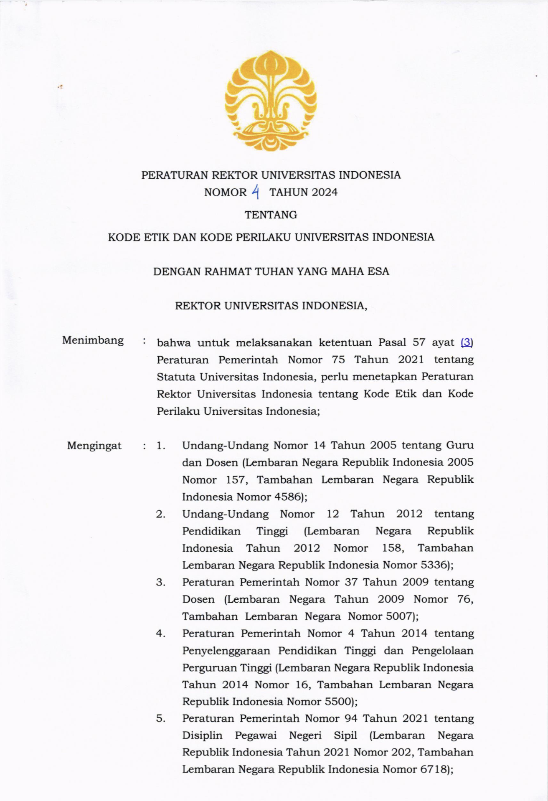

Urdaneta City University enforces a comprehensive Written Code of Ethics and Professional Conduct that defines the ethical standards, rights, responsibilities, and behavioral expectations for all members of the university community. This code applies systematically to university leaders, academic staff (faculty), administrative personnel, and students, ensuring a harmonious, respectful, and value-driven academic environment.
The Code of Ethics provides clear guidelines on academic integrity, professional responsibility, data privacy, conflict of interest, non-discrimination, and ethical decision-making. By establishing these shared values and standards, UCU promotes institutional transparency, mutual respect, and high professional standards across all administrative and academic operations.
As part of our governance development and digitalization efforts, the university studies and benchmarks its regulatory codes against leading global institutions. The evidence below showcases the benchmarked Universitas Indonesia (UI) Rector's Decree No. 4 of 2024 regarding the Code of Ethics and Code of Conduct, which serves as a model framework for structuring open-access, digital policy compliance and institutional transparency.
| Referenced Institutional Code of Ethics Framework | ||
|---|---|---|
| Institution | Policy Reference | Document Source Link |
| Universitas Indonesia (Indonesia) | Rector's Decree No. 4 of 2024 (Code of Ethics & Code of Conduct) | https://ppid.ui.ac.id/wp-content/uploads/2024/10/PR-2024-NO-4-Tentang-Kode-Etik-Dan-Kode-Perilaku-Universitas-Indonesia_watermark.pdf |
| Universitas Indonesia (Indonesia) - Rector's Decree No. 4 of 2024 |
|---|
|
 Code of Ethics rule at Universitas Indonesia through Rector's Decree No. 4 of 2024.
|